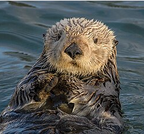

Mis animales favoritos
| Animales | Descripcion | Imagen |
|---|---|---|
| NUTRIA | Los lutrinos, conocidos comúnmente como nutrias, son una subfamilia de mamíferos placentarios carnívoros de la familia Mustelidae. Actualmente existen trece especies de nutrias repartidas en siete géneros, con una distribución de la población prácticamente mundial. |
 |
| FOCA | Las focas son mamíferos marinos pinnípedos, carnívoros y semiacuáticos, adaptados a la vida en aguas frías. Pertenecen a la familia Phocidae (focas verdaderas), caracterizándose por no tener pabellón auditivo externo, ser excelentes nadadoras con extremidades tipo aleta y moverse con torpeza en tierra firme. |
|
| BALLENA | Las ballenas son un grupo diverso y ampliamente distribuido de mamíferos marinos placentarios totalmente acuáticos. Como agrupación informal y coloquial, corresponden a grandes miembros del infraorden Cetacea, es decir, todos los cetáceos excepto delfines y marsopas. |
|
| TORTUGA | Los quelonioideos son una superfamilia de tortugas que comprende las tortugas marinas. Consta de dos familias actuales: Cheloniidae y Dermochelyidae, que incluyen siete especies vivas. |
|
| CABALLITO DE MAR | El caballito de mar (Hippocampus) es un pequeño pez marino caracterizado por su cabeza equina, cola prensil y placas óseas en lugar de escamas. Son nadadores lentos que se camuflan en praderas marinas. Una característica única es que el macho incuba los huevos en su bolsa ventral. |
|